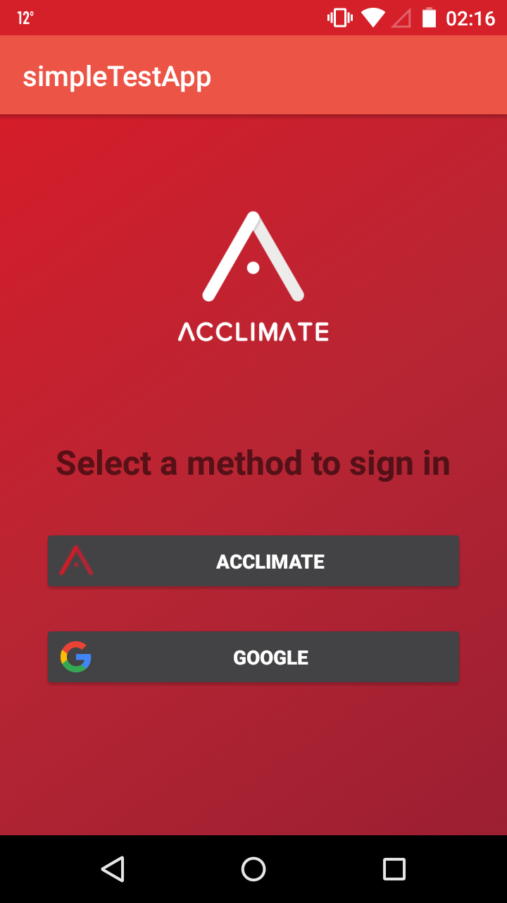
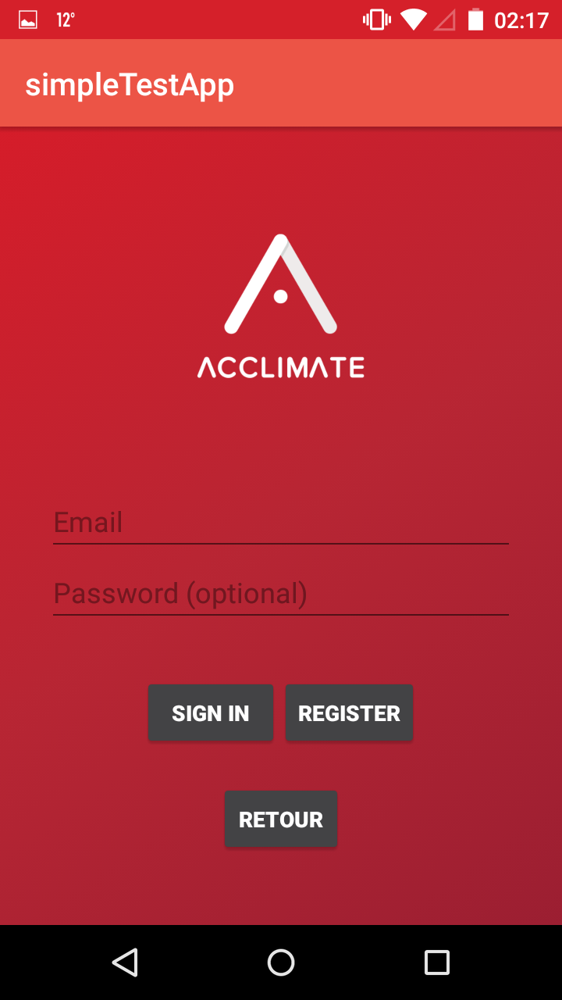
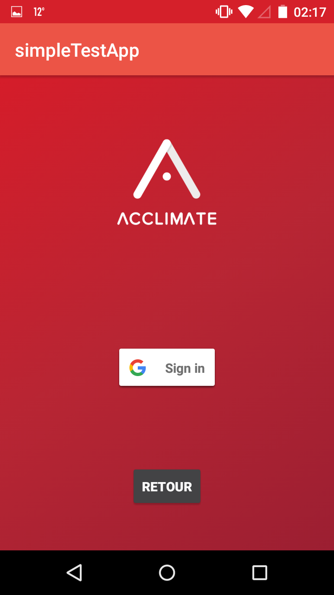
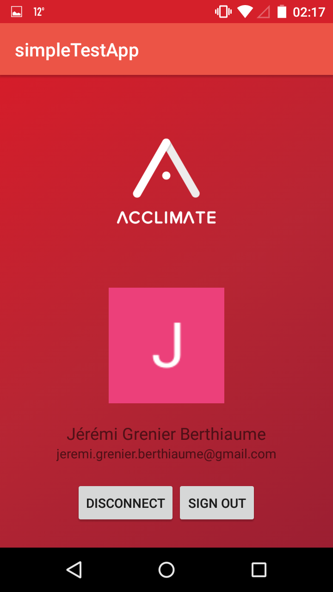
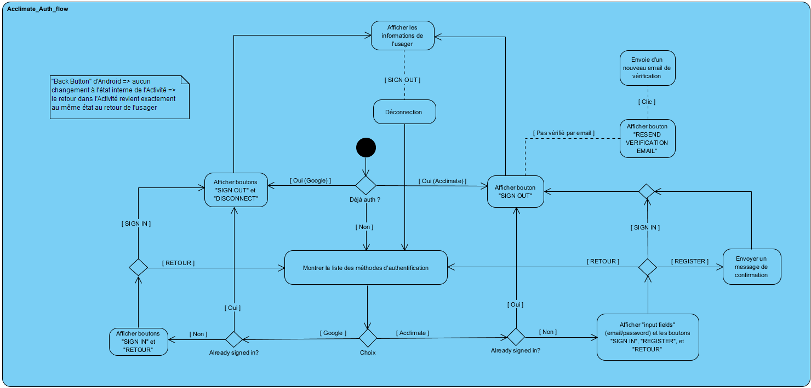
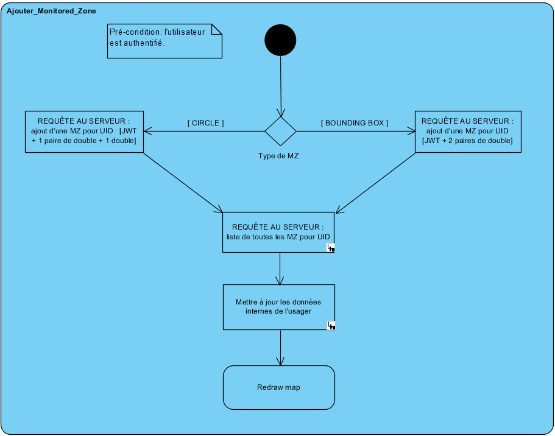
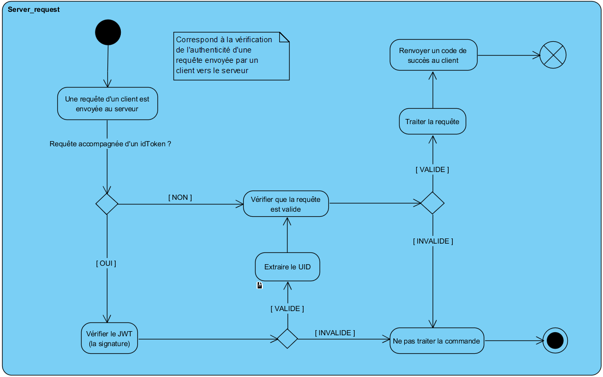

[Android] Intégration de "Google SignIn" et "Acclimate (Email/Password) SignIn" complétée via Firebase. OAuth 2 est donc intégré à l'application. Le fruit de plusieurs jours de travail!
[Android] Plusieurs heures passées à peaufiner le "activity_firebase.xml" (AuthUI) et le code lui étant relié pour permettre une meilleure expérience.
[Android]Clean up du code laissé derrière par certaines expérimentations liées aux tests d'intégration de méthode d'authentification.
[Android] Début d'un travail de Refactoring pour mieux séparer le code de l'Authentification: idéalement, chaque méthode de SignIn serait une Interface?
[Android] Meilleur set up du "Firebase Console" et intégration des 2 autres admins du projet (invitation envoyée).
[Android] Migration du projet Android sur BitBucket pour commencer à séparer les différentes branches du projet en différents 'repo'. Va permettre une synchronisation plus efficace des projets individuels puisqu'on n'aura pas de problèmes de "Merge/Pull" lorsqu'un projet n'étant pas relié au notre a été mis à jour (par exemple, le Backend vs Android).
[Android] Suite à l'intégration du traitement Spring sur les JSON (par Olivier), j'ai retravaillé sur l'option de recherche d'adresse/location dans la carte. Cette option fonctionne désormais parfaitement.
[Android] Refactor du code des mthodes "@Override onCreate" du package "MainActivities": simple déplacement de certaines sections dans des procédures privées afin de rendre le tout plus lisible.
[Android] Début de travail sur la localisation GPS afin d'obtenir le plus rapidement possible la position de l'usager afin de pouvoir savoir où centrer la Map avant même que celui-ci n'y accède (présentement, on centre toujours sur Montréal).
[Android] Importation de la librairie "Picasso" pour mieux traiter les images provenant d'une URI associée à un ImageView.
[Design] Création d'un mini logo (24px) pour les ImageButton concernant Acclimate.
[Design] Design du UI de base pour l'authentification.
[Backend] Set up d'un Robot Moniteur pour commencer la migration du serveur en backend.
[Général] Explication sommaire du système de "Tokens" de l'authentification par OAuth 2 aux membres de l'équipe.
[Général] Vu la nécessité de traiter de vérifier des signatures électroniques, il va falloir conserver un "secret" ou une "clé privée" quelque part dans le code du Backend. Ceci pose un problème de sécurité et j'ai donc proposé qu'on migre le Backend de GitHub vers BitBucket puisque ce dernier offre des 'repos' privés gratuitement (alors que GitHub ne nous permet de faire cela présentement que parce que nous sommes étudiants).
[Lecture] Lecture sur la manière de cacher de l'information sensible dans le code du Backend. Quelques options s'offrent, mais il faut faire attention au "reverse engineering". J'approfondierai mes connaissances là-dessus au moment où on intégrera ces String dans le Backend.
[Lecture] Lecture sur la manière de passer et interpréter les "idToken" générés par l'authentification d'OAuth 2.
[Lecture] Lecture sur les différentes options qui s'offrent pour les notifications. Le problème actuel est la décision par rapport au "minSDK": il existe beaucoup de features intéressants pour les versions plus récentes d'Android, mais nous ne voudrions pas exclure une grande part du marché juste pour cela.
[Analyse] Création de diagrammes d'activité pour le flow de l'authentification, d'une requête au serveur, et de l'ajout d'une Monitored Zone.
[Analyse] Proposition d'une organisation de la structure de la Base de Données afin de permettre le déploiement plus efficace des notifications. Idée: semblable à un filtre de Bloom (mais sans hachage nécessaire), nous allons probablement utiliser des "tuiles" et classifier les Monitored Zones de chaque usager en fonction de quelles tuiles celles-ci touchent. Ainsi, lorsque le serveur va se demander à qui envoyer une notification, il y aura un tri plus rapide des options à considérer en fonction de dans quelle tuile se situe la Pin causerait l'envoie de notifications.







Semaine 9 juillet
[WebApp] Changement du default_pin de "Feu" à "Météo"
[Général] Le robot moniteur vérifie désormais toutes les 5 minutes
Semaine 2 juillet
[Android] Plusieurs heures de recherches pour tenter d'intégrer un système d'authentification indépendant. (Considération d'implémentation manuelle, FireBase, Google SignIn et Spring OAuth.)
[Android] Recherche sur, et intégration des SharedPreference pour sauvegarder dans la mémoire interne certaines choses (les zones d'abonnements et les filtres, pour l'instant).
[Android] Refactor du code à plusieurs endroits. Certaines classes sont 25% plus courtes.
[Android] Réorganisation des classes dans des packages afin d'avoir une meilleure séparation.
[Android] Découverte et fix du bug qui empêchait d'utilise InstantRun d'Android Studio: la vitesse de chargement pour des tests est désormais largement plus rapide.
[Android] Intégration d'une Activité de "Settings". Présentement encore incertain de son utilisation précise dans le futur.
[Android] Début du renommement du package du projet pour passer de "simpleTestApp" à "Acclimate".
[Android] Intégration des User Pins, pour les différencier des Pins officielles.
[Android] Localisation GPS intégrée. Fonctionne hors-ligne et en mode avion.
[Android] Intégration des "Marker Clusters" pour les bases de données statiques (les Pins dites "historiques") afin de réduire le lag lors du visionnement.
[Android] Intégration de plusieurs Threads: la Home Page fetch désormais les données en parallèle ce qui permet une initialisation plus rapide de l'app. De même pour le fetch des Pins historiques.
[WebApp] Corrections de certaines erreurs sur la classification des Pins.
[WebApp] Retouche sur les User Pins afin d'avoir une taille uniformisée.
[Backend] Commencement de l'intégration de QuartzScheduler au niveau du Server.
[Général] Mise en place d'un "robot moniteur" qui permet de garder le serveur ainsi que la WebApp toujours actifs (https://uptimerobot.com/).
Semaine 25 juin
Fin des examens intras. Rencontre avec l'équipe. J'ai retouché le site web (WebApp) pour corriger certaines erreurs d'interprétation des types de PIN et aussi pour intégrer les USER PIN. Il reste à décider de la grosseur de ces pins (sera fait plus tard).
Semaine du 4 juin
Recherches par rapport aux connections sécurisées: confirmation que la connection établie par l'application est sécurisée
en utilisant les protocoles du HTTPS (TLS/SSL). L'envoie d'informations sensibles (username+password bundle) via l'URL ne devrait
donc pas être une brèche de sécurité: seul le nom de domaine ne sera pas encrypté. Ce sera donc fort probablement
l'approche utilisée pour l'enregistrement et l'identification des usagers.
Lecture par rapport aux Notifications, Data Storage, et Account Management System.
Semaine du 21 mai
Création du site web de l'équipe (affichage dynamique: accessible par téléphone cellulaire), organisation du GitHub en conséquence (nouveau dossier spécifique au site web pour ce cours), création du patron pour les pages individuelles des membres de l'équipe.
Design pour différencier les Pins des alertes déclarées par des utilisateurs de celles provenant de BDD officielles (gouvernement).
Semaine du 14 mai
Rencontre d'équipe pour revisiter les progrès réalisés et élaborer un Plan de Travail qui définit un peu mieux les objectifs, la répartition des tâches et le découpage des concepts.
Semaine du 30 avril
Recherche sur la manière de programmer des applications Android.
Brainstorm sur le concept du logiciel et la répartition des tâches.
Participation au Hackhaton "HackQc 2018" sur les Données Ouvertes. Premier jet de prototype de Acclimate (qui a remporté la 3e place).
Contributions personnelles (durant le Hackathon):
Quelques décisions sur le design (police utilisée dans le logo, ajout de texte indicateur sous le logo de la carte sur l'Activity d'accueil, etc.).
Contribution pour le Parsing de la BDD « Historique ».
Apprentissage sur le fonctionnement des applications Android et leur développement.
Création du patron des Activities de l'application.
Implémentation du design proposé par Charles-Philippe Lepage dans le Frontend de l'application (travail avec les fichiers XML et le Manifest).
Implémentations mineures reliées au Backend (filtres d'affichage sur la carte, intégration d'un champ de recherche, affichage dans la page d'accueil du nombre de chaque alertes en fonction de leur type).